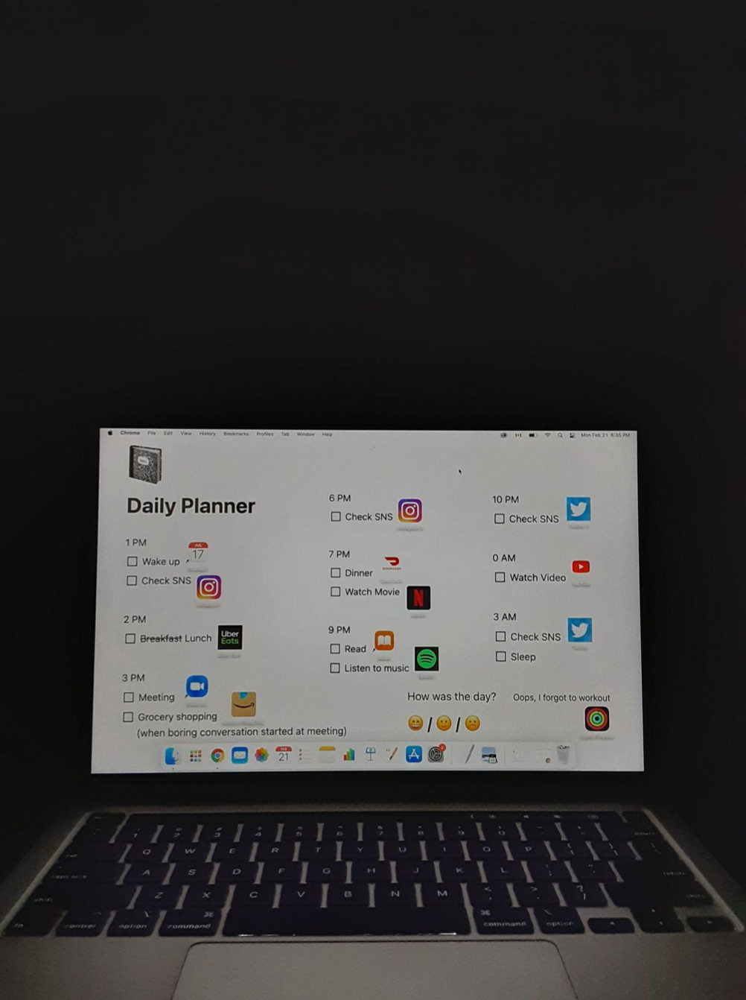

I placed app icons for each thing to do.
(i.e., eating for Uber and Doordash, meeting for Zoom).
I chose to take picture of it on my laptop screen so that it gives feeling of so-called ‘meta’.
Black background represents voidness and depression in real life.
I liked its aesthetic for art itself,
but I figured out that many of the class have tried something more deeper and complicated.
So I let myself to explore more with this basic draft.